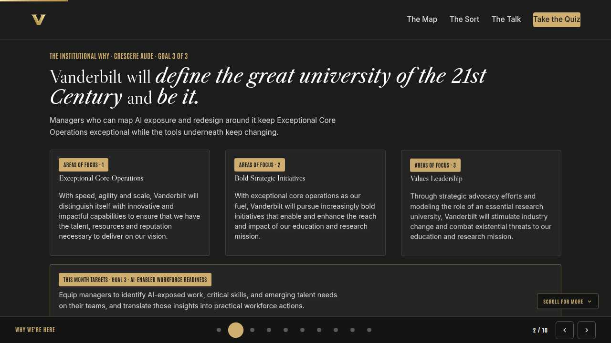
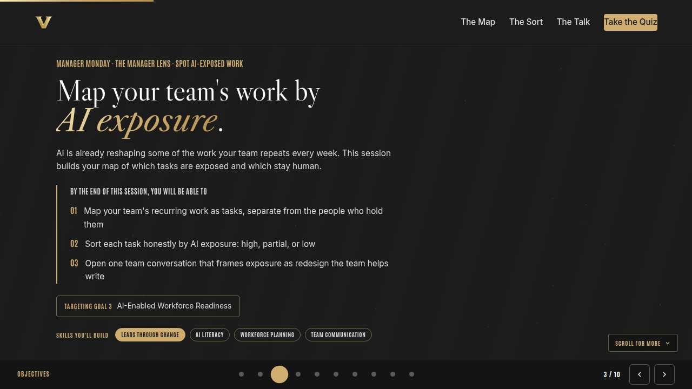
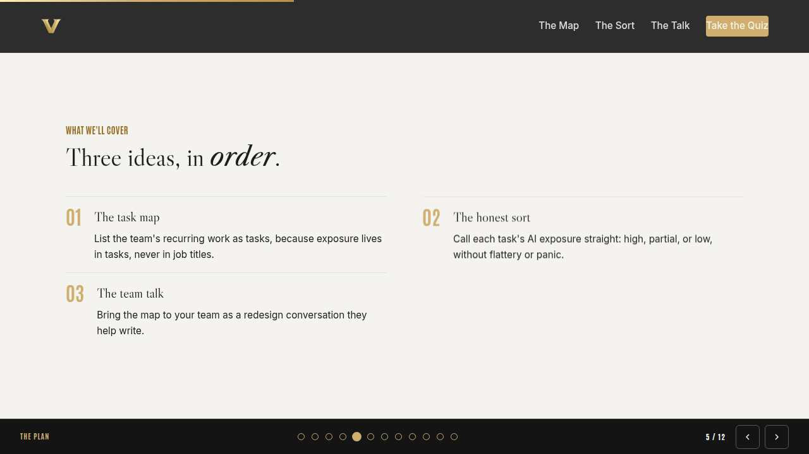
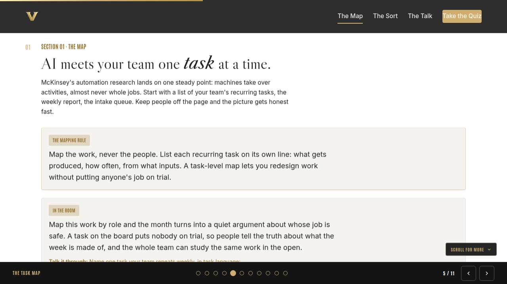
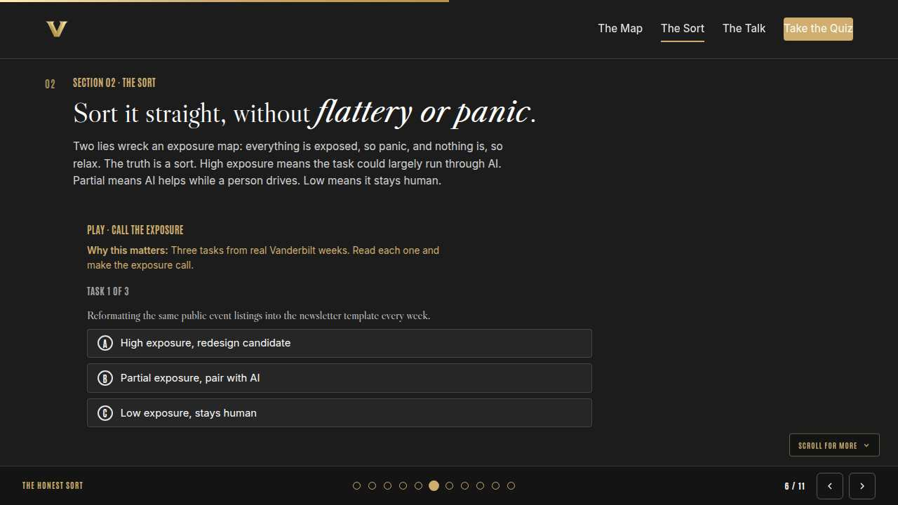
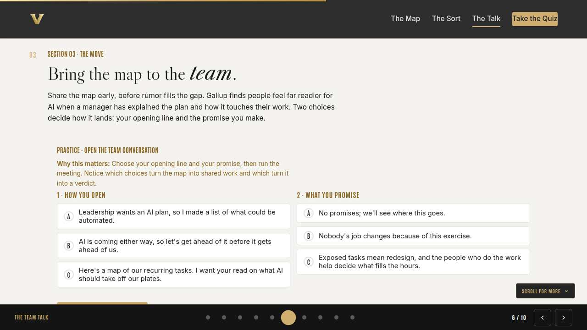
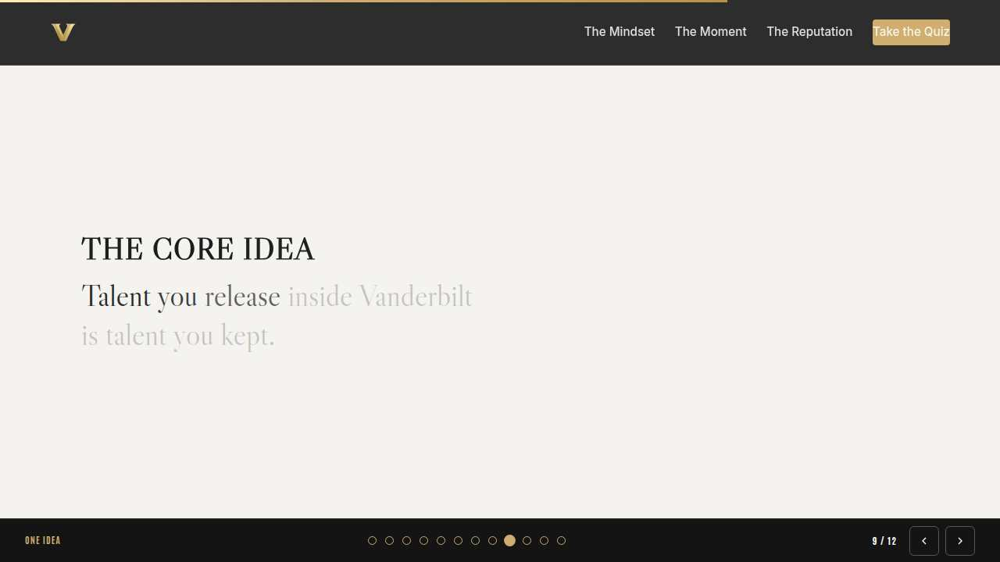
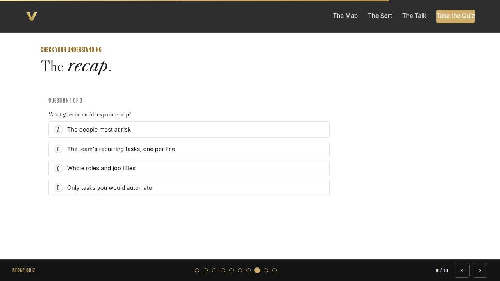
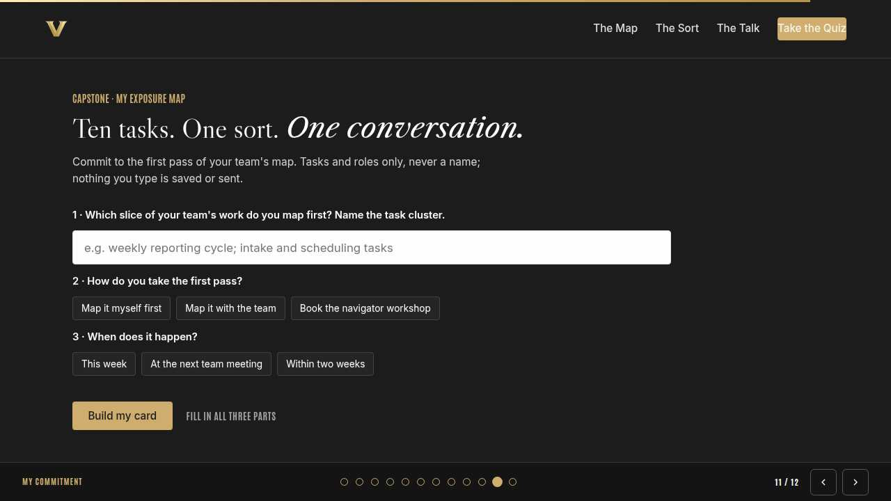
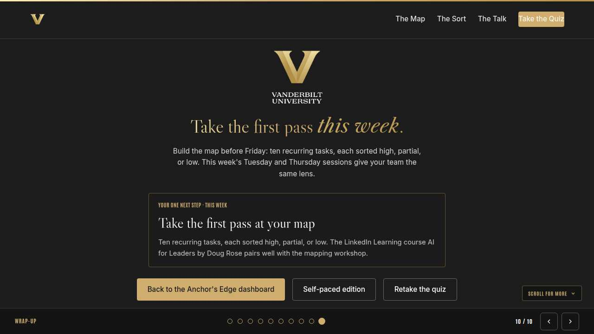

Vanderbilt · Anchor's Edge · ATD facilitator guide · print edition
The Exposure Map, the facilitator guide

Run of show
| Screen | Full (min) | Core (min) |
|---|---|---|
| Welcome / QR | 2 | 1 |
| Why we're here | 2 | 1 |
| Objectives | 1 | 1 |
| Agenda | 1 | skip |
| The task map | 9 | 6 |
| The honest sort | 11 | 8 |
| The team talk | 9 | 6 |
| The core idea | 1 | skip |
| Recap quiz | 4 | 3 |
| Capstone commitment | 4 | 3 |
| Closing | 1 | 1 |
| Total | 45 | 30 |
The goal this month serves
Goal 3, AI-Enabled Workforce Readiness.
Audience
Vanderbilt people managers and team leads in the Anchor's Edge weekly rhythm. Works for 6 to 40 on a call; breakouts run in pairs. No prerequisites; April is the Spot AI-Exposed Work month, and this session opens it.
Room setup
Virtual, instructor led: camera on, deck link in chat, breakouts of 2 available. Learners follow on their own screens via the welcome-slide link or QR. Nothing typed into the deck is saved or sent.
Materials
- Meeting platform with screen share and breakout rooms; deck link ready to paste in chat
- Facilitator machine with the facilitator edition open; notifications off
- Learners on their own devices with the learner link
- Chat open for share-outs; the capstone copy button pastes there cleanly
A week before
- Run the learner edition start to finish and do every interaction honestly; you will demo at least one live.
- Read this month's theme page on the Anchor's Edge dashboard so the goal tie-in is fluent.
- Send the invite with the learner link and one line on what to bring.
The day before
- Test screen share with the facilitator edition; confirm the notes rail is readable.
- Open the learner link on a second device; the QR must land there.
- Run the section interactions once so you can drive them without reading.
30 minutes before
- Welcome slide up as people join; link pasted in chat.
- Close every other tab; silence the machine.
- Breakout rooms pre-configured in pairs.
When things go sideways
If Screen share or the site fails mid-session: Paste the learner link in chat and narrate from your own browser; every interaction runs on learner devices without the share.
If Breakout rooms are unavailable: Run the breakout prompts as 60-second chat storms: everyone types their answer at once, you read the best three aloud.
If A manager names a specific employee while sorting a task: Protect them warmly and immediately: 'Hold that. Tasks and roles, never names.' Exposure belongs to work, and the norm only holds if you hold it every time.
If The room turns anxious about their own manager roles: Name it honestly: manager work is heavy with low-exposure tasks like coaching and judgment calls, and the mapping skill itself is exactly the kind of work that stays valuable.
Tough questions, ready answers
Q: Isn't this just building the case for cutting my team?
The map is a redesign tool, and Goal 3 is workforce readiness: freed hours moving to higher-value work, skills growing before the change arrives. A team that sorts its own work shapes what comes next; a team that waits gets sorted by someone else's spreadsheet.
Q: What if a task sorts as high exposure but the approved tools can't do it yet?
Then the map is ahead of the tooling, which is the good direction. Log the task, note what the tool would need, and revisit quarterly. High exposure is a signal about the shape of the work, and the redesign can start before the automation does.
Q: Should I share the map with HR or leadership?
Share the task-level map, yes; that is exactly the insight Goal 3 asks managers to surface. Keep it in task language with no names attached, and pair every high-exposure call with your redesign intent so it reads as a plan, never as a cut list.
Copy-paste templates
Pre-work invite (paste into the calendar invite)
Subject: Monday, 45 minutes on seeing AI-exposed work before it changes your team. Bring a rough sense of the five tasks your team repeats every week. No prep documents, no names. Live and interactive; have the session link open on your own screen.
7-day pulse (send one week after)
Subject: Does the map exist? Three lines, reply whenever: 1) Does your ten-task map exist, with exposure calls? 2) Which call surprised you? 3) Has the team seen it, and what did they add?
After the session
Seven days out, send the pulse: 'Does your ten-task map exist? Which exposure call surprised you? Has the team seen it yet?' Count of completed team maps is the Level 3 metric for the month.
Welcome / QR Full 2 min · Core 1
Get everyone into the deck on their own screen and set the tone: 45 minutes, live, hands on.
Say
“Welcome to Manager Monday. Scan the code or click the link in chat so this session runs on your screen too. Forty-five minutes, one focus: Walking your team's work through an AI-exposure lens.”
Do
- Slide up as people join; link pasted in chat every few minutes.
- State the norm once: type into your own screen, nothing you enter is saved or sent.
Watch for: People lurking without the deck open. The interactions only land if the deck is on their screen.
Transition: “Before the topic, thirty seconds on why Vanderbilt is asking for this hour.”

Why we're here Full 2 min · Core 1
Anchor the session in the Chancellor's charge and name the goal this month serves, inside one minute.
Say
“One sentence from the Chancellor sits over everything we do: Vanderbilt will define the great university of the 21st Century and be it. Managers who can map AI exposure and redesign around it keep Exceptional Core Operations exceptional while the tools underneath keep changing. This month serves Goal 3, AI-Enabled Workforce Readiness.”
Do
- Read the mission line slowly, once; name the goal, once.
- No discussion here; the whole slide is under a minute.
Transition: “Here is what you will be able to do in 45 minutes.”

Objectives Full 1 min · Core 1
Set the contract for the session in under a minute.
Say
“By the end of this session: map your team's recurring work as tasks, separate from the people who hold them; sort each task honestly by ai exposure: high, partial, or low; open one team conversation that frames exposure as redesign the team helps write. That is the whole contract.”
Do
- Read the three objectives briskly; do not elaborate yet.
Transition: “Three stops to get there.”

Agenda Full 1 min · Core skip
Show the path so the room can pace itself.
Say
“Three stops: the task map, the honest sort, the team talk. Each one has something to play with, so keep the deck open.”
Do
- Point once at each stop; ten seconds each.
Transition: “Stop one.”
Core path: Core: skip the read-through, gesture at the slide in passing.

The task map Full 9 min · Core 6
Install the mapping rule: exposure lives in recurring tasks, never in people or titles.
Say
“April is about seeing what is changing on your team before it changes you. The instinct is to ask which jobs are safe. McKinsey has studied automation for years and keeps finding that the question is aimed at the wrong unit: machines take over activities, almost never whole jobs. So we start smaller and more honest. What tasks does this team repeat every week?”
Do
- Read the lead, then bring up the In the room card and let it land for a beat.
- Run the discussion prompt: one recurring task in task language, name off it. Take two or three voices.
- Run the breakout: two recurring tasks in task language, no names attached.
Ask
“What changes when you write down the weekly summary instead of a person's name?”
Expect:
- The conversation stops being about someone's job
- You can sort it without anyone getting defensive
- It gets specific enough to actually redesign
Respond: All of it. Task language is what lets you do this month in the open instead of in a locked spreadsheet.
Debrief: The map is a list of tasks with rhythms and inputs. People hold portfolios of tasks, and no portfolio is all one color.
Watch for: Managers drifting into naming people or rating roles. Redirect every time: tasks on the map, people in your care.
Transition: “A list is a start. The sort is where honesty gets tested.”
Core path: Core: skip the breakout; ask for one recurring task in chat instead.

The honest sort Full 11 min · Core 8
Teach the three exposure calls and their tells, inside the shared traffic light rules.
Say
“Now sort it straight. High means the task could largely run through AI. Partial means AI helps while a person drives. Low means it stays human. And the sort lives inside the traffic light we share all year: green is public or generic, go; yellow is internal, approved VU tools only; red is private information about people, never.”
Do
- Run Call the exposure live; everyone plays on their own screen.
- After the coaching task, pause: ask why it stays human even though AI could draft the words.
- Run the breakout: one task, one exposure call, partner challenges it.
Ask
“Which pull is stronger in your own sort: calling everything exposed, or calling nothing exposed?”
Expect:
- Panic sorters who see exposure everywhere
- Comfort sorters who protect every task
- Some will admit they flatter their team's work
Respond: Both pulls are fear in different clothes. The honest sort is the kind thing; it is what makes the redesign real instead of cosmetic.
Debrief: Repetitive and rule-based leans high. Judgment over internal work leans partial, in approved VU tools. Trust and private people data stay human, always.
Watch for: Anyone suggesting AI for red-light work like coaching notes or performance concerns. Restate the light: private information about people, never.
Transition: “You have a sorted map. Now it has to survive contact with the team.”
Core path: Core: run the trainer, skip the breakout, take one voice on the debrief question.

The team talk Full 9 min · Core 6
Equip managers to open the exposure conversation as invitation and redesign, with a keepable promise.
Say
“Your team will hear about AI exposure from somewhere: a headline, a rumor, or you. The version they hear from you can come with tasks on the table and a promise you can keep, which is that the people who do the work help decide what fills the freed hours. We are going to build that opening.”
Do
- Run Open the team conversation; give the room two minutes for both choices.
- Ask one volunteer to read a weak outcome aloud; let the room name what went wrong.
- Point at the pattern: task map on the table, redesign promise out loud.
Ask
“Why is 'nobody's job changes' the wrong promise even though it feels kind?”
Expect:
- Work will change, so the promise breaks
- It spends credibility you will need later
- The team hears a manager who has not looked closely
Respond: Right. Promise the thing you control: change arrives as redesign, with their voice in it. That one holds.
Debrief: The strong open has a shape: here is our task map, here is my honest sort, help me decide what the freed hours become.
Watch for: Managers rehearsing reassurance instead of invitation. Push them toward the ask: what is your read on this map?
Transition: “Quick recap, then your own map goes on a card.”
Core path: Core: everyone runs the builder solo; skip the read-aloud.

The core idea Full 1 min · Core skip
Land the one sentence the session exists to install.
Say
“If you keep one sentence from today, this is it. Read it once, out loud: You can't redesign work you haven't written down.”
Do
- Pause two beats after reading; the word animation carries it.
Transition: “The recap makes it stick.”
Core path: Core: pass through in stride; the sentence reads itself.

Recap quiz Full 4 min · Core 3
Score the learning while it is fresh; wrong answers are teaching moments, not failures.
Say
“Three questions, on your own screen. Answer honestly; the explanations are where the learning sticks.”
Do
- Give the room 90 seconds to run it individually.
- Ask for a show of results in chat: how many got 3 of 3?
- Read out the explanation for whichever question drew the most misses.
Watch for: Rushing past the why lines. The explanations carry the teaching.
Transition: “Now point it at your real week.”

Capstone commitment Full 4 min · Core 3
Convert the session into one named, dated action per person.
Say
“Now commit to the first pass. Pick the slice of your team's work you map first, choose how you take the pass, pick the window, and copy the card somewhere you will see it before Friday. Tasks and roles only, never a name. Two minutes, quiet, go.”
Do
- Two quiet minutes; everyone builds their own card.
- Invite two or three volunteers to read their card aloud or paste it in chat.
- Remind: copy the card somewhere you will see it this week.
Watch for: Vague entries. Nudge for a name-able situation and a real date.
Transition: “Last slide.”

Closing Full 1 min · Core 1
End with the next step and where this thread continues.
Say
“You leave with a lens and a map to build. Tomorrow's Take-Off Tuesday hands every member of your team the same skill at the task level: automate, augment, or leave alone, one task at a time. Thursday's Thrive Thursday sharpens the critical thinking that keeps the whole month honest, sorting AI hype from real value. If you want to go deeper, the LinkedIn Learning course AI for Leaders by Doug Rose pairs with the navigator-led mapping workshop.”
Do
- Point at the next-step card; one sentence.
- Name the rest of the week's rhythm: the other sessions echo this month's theme.
Generated from facilitator/notes.json. The on-screen facilitator edition lives at ./ alongside this guide.